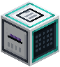
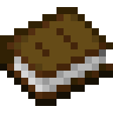
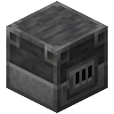
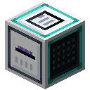
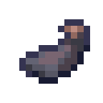

Tokens
A model never sees text, only tokens: numbers that each stand for a piece of text. Without a tokenizer, every character is a token, 78 in all: the letters, digits and marks, the space and the line break. Reading by the character is simple but short-sighted. Every word costs several predictions, and the 64 tokens a model reads at once cover only 64 characters.
The BPE Forge

The BPE Forge learns a vocabulary from the text on an Archive Drive by byte-pair encoding:
- Start with the characters.
- Count every pair of neighbouring tokens in the text.
- Join the most frequent pair into one new token, everywhere it occurs.
- Repeat until the vocabulary is as big as you asked.
So t and h become th, th and e become the, and a space and the become ␣the. Common words end up as single tokens and rare ones stay in pieces, so any text can still be written. Merges stay inside a word: a word keeps the space before it, every digit stands alone, and punctuation keeps to itself.
 Crafting
Crafting





Put in a drive and a Tokenizer, pick a size, and watch the drive's text fall into fewer, longer tokens. Every merge is written onto the tokenizer as soon as it is learned, so you can take it out at any time. The forge carries on from the merges a tokenizer already has. A bigger size keeps every token of a smaller one, and a smaller size cuts a tokenizer back to the vocabulary it was on its way through.
Crafting (Shapeless)



Using a tokenizer
Put the tokenizer in the Model Core's Tokenizer slot, and models built there read and write its tokens. Archive text in the data slots is cut into them, and so is whatever you say to the model through a Terminal. Datasets and the orders agents are given are always spelled out one character at a time, which every vocabulary can do.
The tokenizer sets V: the rows of the embedding's table and the scores the last layer gives. Changing it reshapes those layers, so they start over. A saved model keeps the tokenizer it was trained with.
What size?
- Longer tokens see further. At 512 tokens, a token of archive text carries about two and a half characters, so 64 tokens reach back about 160 characters instead of 64.
- More tokens cost weights. The embedding has a row and the last layer a score for every token: V × width weights each.
- Rare tokens learn slowly. A token seen only a few times in practice has little to learn from.
Losses are counted per character, not per token, so models with different tokenizers compare fairly: a token's loss is shared among the characters it stands for.
 Tensor CasingBookGlassWeight CrystalBlast FurnaceBPE ForgePaperInk SacAmethyst ShardTokenizer
Tensor CasingBookGlassWeight CrystalBlast FurnaceBPE ForgePaperInk SacAmethyst ShardTokenizer